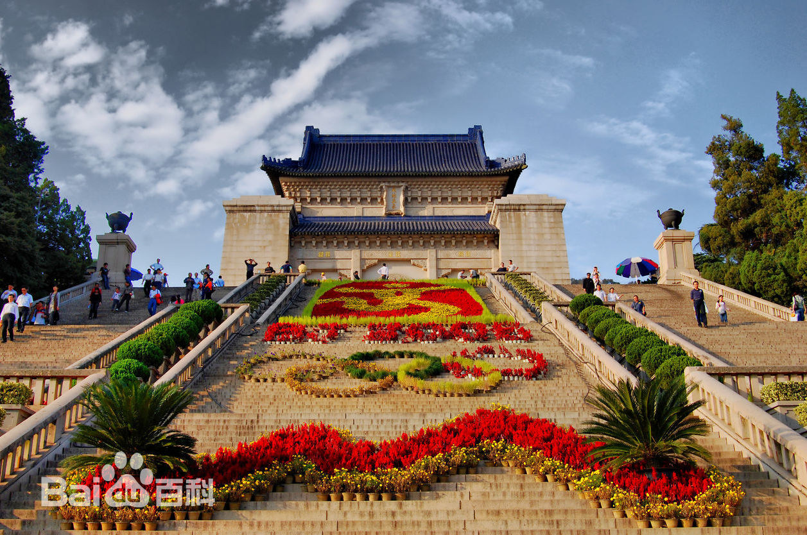

中山陵位于南京市玄武区紫金山南麓钟山风景区内，是中国近代伟大的民主革命先行者孙中山先生的陵寝，及其附属纪念建筑群，面积8万余平方米。中山陵自1926年春动工，至1929年夏建成，1961年成为首批全国重点文物保护单位，2006年列为首批国家重点风景名胜区和国家5A级旅游景区，2016年入选“首批中国20世纪建筑遗产”名录。 中山陵前临平川，背拥青嶂，东毗灵谷寺，西邻明孝陵，整个建筑群依山势而建，由南往北沿中轴线逐渐升高，主要建筑有博爱坊、墓道、陵门、石阶、碑亭、祭堂和墓室等，排列在一条中轴线上，体现了中国传统建筑的风格，从空中往下看，像一座平卧在绿绒毯上的“自由钟”。融汇中国古代与西方建筑之精华，庄严简朴，别创新格。
-
中文名称：中山陵
-
外文名称：The Sun Yat-sen Mausoleum
-
地理位置：南京市玄武区紫金山南麓
-
占地面积：8万多平方米
-
开放时间：8：30-17：00（周一关闭祭堂和墓室）
-
景点级别：国家5A级旅游景区
-
门票价格：免费
-
著名景点：孙中山纪念馆，音乐台，流徽榭